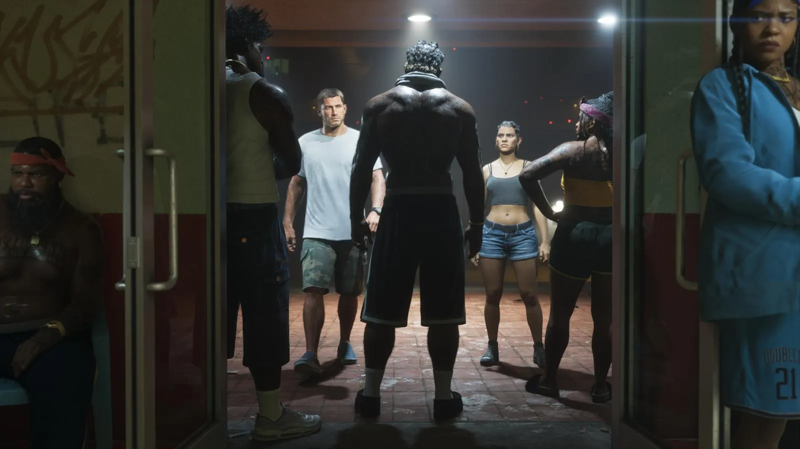

Coming Home: прохождение миссии GTA 6
Опубликовано:

- Лусия выходит на свободу. До звонка из тюрьмы стоит выполнить пять необязательных заданий — от них зависит, с какого уровня начнутся отношения Джейсона и Лусии.
- Глава 1, миссия 11 из 22. Играем за: Джейсон.
- Награда: Лусия выходит из тюрьмы и переезжает к Джейсону.
Миссия коротко
| Глава | 1. Just Like Paradise |
| Номер в сюжете | 11 |
| Играем за | Джейсон |
| Кто даёт | Лусия |
| Где начинается | тюрьма Hamlet Correctional (округ Вайс-Дейл) → бар Rusty Anchor |
| Условие | Feng Shui; звонок Лусии |
| Награда | Лусия выходит из тюрьмы и переезжает к Джейсону |
| Переиграть | нельзя — сохраняйтесь вручную |
Где начинается
Прохождение по шагам
- Подготовьтесь (по желанию). Выполните пять необязательных заданий — список ниже — и почините дом: стену в спальне (покрасить в любой цвет), сломанную лестницу, крышу (по приставной лестнице) и перила на балконе для тренировок.
- Дождитесь звонка. Поспите до утра. Если Лусия не позвонила, поспите ещё раз и покатайтесь, пока не позвонит.
- Езжайте в Hamlet Correctional. Если забрали одежду Лусии, держите сумку в багажнике. Поговорите с охранником на входе — Лусия выйдет к воротам.
- Дойдите с Лусией до машины и езжайте в бар Rusty Anchor на севере Ки-Ленто.
- В баре. Если вы привезли одежду, Лусия переоденется. Здесь ждут Кэл и пилот Донни.
- Купите пиво. У бармена (L2 + △ / LT + Y) возьмите два пива Pindayho за $6, заберите второе со стойки и отнесите оба Лусии за бар.
- Проведите вечер. Выпейте шот на задней стойке, поговорите с друзьями, потанцуйте с Лусией (левый стик к ней). Найдите Маттиа — он говорит по телефону за баром, — угостите его и сыграйте в бильярд (кий на стене, результат не важен).
- Драка. Игру прерывают «Авиаторы», и Джейсон предлагает драку: □ (X) — удар, зажать ✕ (A) — блок; блокируйте, когда противник начинает разворачивать плечи.
- Бегите с Лусией от приехавшей полиции. Вечер закончится на пляже, потом — дома.
Советы
- Все пять необязательных заданий дают лучший старт: отношения начнутся с уровня 3 из 4 (меню «Джейсон и Лусия»).
- Изменения отношений показывают сердечки справа на экране. Во второй главе стоит дотянуть отношения до уровня «Hot Together».
- Включите все уведомления о прогрессе в Настройки → Интерфейс, чтобы ничего не пропустить для 100%.
- Предложения Кэла и Донни в баре ни на что не влияют.
Что можно пропустить
Можно пропустить (одноразово — до звонка Лусии): пять заданий подготовки и ремонт дома. Отремонтированный дом Лусия оценит в финальной сцене.
Частые вопросы
Что сделать до освобождения Лусии в GTA 6?
Пять необязательных заданий: продукты, цветы, цепочка, стрижка и одежда для Лусии от Энди. Плюс ремонт дома. Тогда отношения начнутся с уровня 3 из 4.
Какие цветы купить Лусии?
Любые: большой букет ($10) или розы ($25) — на отношения выбор не влияет.
Зачем покупать Лусии цепочку?
Во второй главе Лусия может оставить её в залог — миссия пройдёт проще.
Источники: PowerPyx, «GTA 6 Coming Home (Lucia’s Release) Walkthrough», а также «Pick up Groceries», «Buy Flowers», «Buy Lucia a Necklace», «Get The Chop», «Get Lucia’s Clothes», 18–19.11.2026; PC Gamer, «GTA 6 mission list», 19.11.2026. Кнопки указаны для PS5, в скобках — Xbox. Названия миссий — как в английской версии игры.